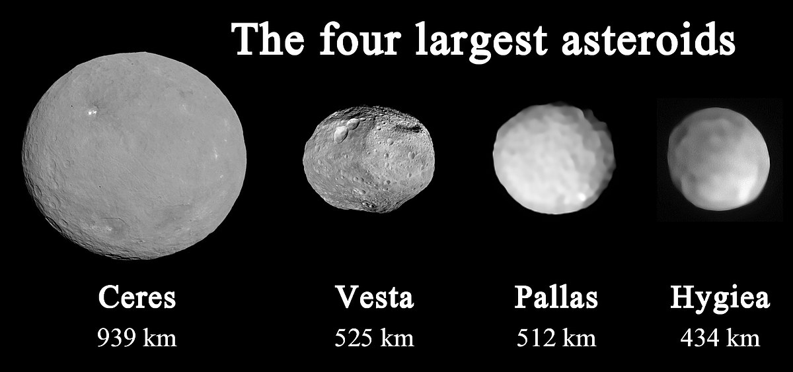
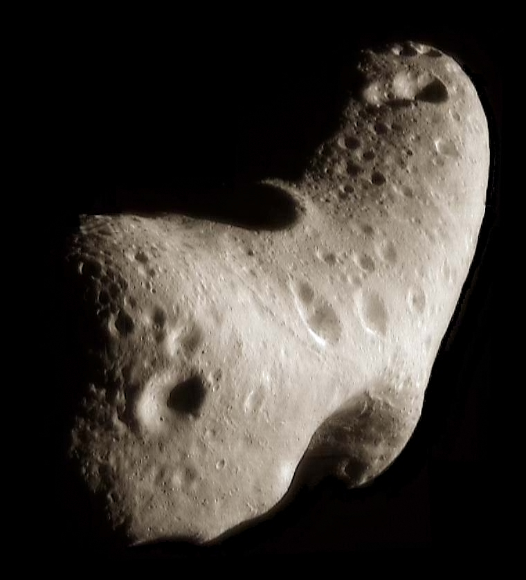
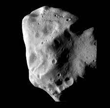

The asteroid belt is a torus-shaped region in the Solar System, located roughly between the orbits of the
planets Jupiter and Mars. It contains a great many solid, irregularly shaped bodies, of many sizes, but
much smaller than planets, called asteroids or minor planets.
1)Distance from sun- between 2.2 and 3.2 AU
2)Width- roughly 1 AU or 150 million km
3)Time for complete revolution around sun- 3-6 Earth years
4)Total mass of asteroid belt= 4% of mass of moon.

This asteroid belt is also called the main asteroid belt or main belt to distinguish it from other asteroid populations in the Solar System such as near-Earth asteroids and trojan asteroids. The asteroid belt is the smallest and innermost known circumstellar disc in the Solar System. About half its mass is contained in the four largest asteroids: Ceres, Vesta, Pallas, and Hygiea.Ceres, the only object in the asteroid belt large enough to be a dwarf planet, is about 950 km in diameter, whereas Vesta, Pallas, and Hygiea have mean diameters less than 600 km. The remaining bodies range down to the size of a dust particle.
Types of Astroid Belts : Types of asteroids in asteroid belt: Individual asteroids within the asteroid belt are categorized by their spectra, with most falling into three basic groups - carbonaceous (C-type), silicate (S-type), and metal-rich (M-type).
1)C-type: C-type asteroids make up more than 75 percent of known asteroids. The "C" stands for carbon, and the surfaces of these extremely dark asteroids are almost coal-black. Carbonaceous chondrite meteorites on Earth have a similar composition, and are thought to be pieces smashed off of the larger asteroids. While C-type asteroids dominate in the belt, according to the European Space Agency, they make up only about 40 percent of the asteroids closer to the sun. These include subgroups of B-type, F-type, and G-types.

C-type astroid belt
2)S-type: S-type asteroids are the second most common type, making up about 17 percent of known asteroids. They dominate the inner asteroid belt, becoming rarer farther out. They are brighter and have metallic nickel-iron mixed with iron- and magnesium-silicates. The "S" stands for silicaceous.

S-type astroid belt
3)M-type: M-type asteroids ("M" for metallic) are the last major type. These asteroids are fairly bright and most of them are composed of pure nickel-iron. They tend to be found in the middle region of the asteroid belt. The remaining rare types of asteroids are A-type, D-type, E-type, P-type, Q-type, and R-type.
